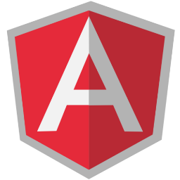
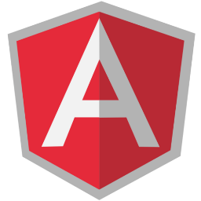

Av El Dorado # 68c - 61 Torre Central, Bogota - Colombia

Lenguajes para aprender en 2020
El mundo de las tecnologias evoluaciona a grandes pasos y con ello es importante para LOS DESARROLADORES estar a la vanguardia preprarandose continuamente en lenguajes de programación ya sea para desarrollo web o desarrollo de aplicaciones. A continuación te dare la defición de algunos de los considerados más importantes.
Es una plataforma de computación originaria de Sun Microsystems, capaz de ejecutar aplicaciones desarrolladas usando el lenguaje de programación Java u otros lenguajes que compilen a bytecode y un conjunto de herramientas de desarrollo.
 Es un lenguaje de programación interpretado, dialecto del estándar ECMAScript. Se define como orientado a objetos, basado en prototipos, imperativo, débilmente tipado y dinámico.
Es un lenguaje de programación interpretado, dialecto del estándar ECMAScript. Se define como orientado a objetos, basado en prototipos, imperativo, débilmente tipado y dinámico.
Es un lenguaje de marcado que se utiliza para el desarrollo de páginas de Internet. Se trata de la siglas que corresponden a HyperText Markup Language, es decir, Lenguaje de Marcas de Hipertexto HTML se considera el lenguaje web más importante siendo su invención crucial en la aparición, desarrollo y expansión de la World Wide Web (WWW). Es el estándar que se ha impuesto en la visualización de páginas web y es el que todos los navegadores actuales han adoptado.
HTML se considera el lenguaje web más importante siendo su invención crucial en la aparición, desarrollo y expansión de la World Wide Web (WWW). Es el estándar que se ha impuesto en la visualización de páginas web y es el que todos los navegadores actuales han adoptado.
 Es un lenguaje de programación multiparadigma desarrollado y estandarizado por Microsoft como parte de su plataforma .NET, que después fue aprobado como un estándar por la ECMA (ECMA-334) e ISO (ISO/IEC 23270). C# es uno de los lenguajes de programación diseñados para la infraestructura de lenguaje común. El nombre C Sharp fue inspirado por el signo ♯, el cual se lee como sharp en inglés para notación musical. Es un juego de palabras, pues '"C#" significa, musicalmente hablando, "do sostenido", donde el símbolo # indica que una nota (en este caso do, representada por C) debe ser un semitono más alta. Esto es una metáfora de la superioridad de C# sobre su antecesor C++ y a su vez hace alusión a la misma metáfora que se ideó para dar nombre a C++.1 Además, el símbolo # puede ser imaginado como la unión de cuatro símbolos +, continuando así con el sentido de progresión de los lenguajes C.
Es un lenguaje de programación multiparadigma desarrollado y estandarizado por Microsoft como parte de su plataforma .NET, que después fue aprobado como un estándar por la ECMA (ECMA-334) e ISO (ISO/IEC 23270). C# es uno de los lenguajes de programación diseñados para la infraestructura de lenguaje común. El nombre C Sharp fue inspirado por el signo ♯, el cual se lee como sharp en inglés para notación musical. Es un juego de palabras, pues '"C#" significa, musicalmente hablando, "do sostenido", donde el símbolo # indica que una nota (en este caso do, representada por C) debe ser un semitono más alta. Esto es una metáfora de la superioridad de C# sobre su antecesor C++ y a su vez hace alusión a la misma metáfora que se ideó para dar nombre a C++.1 Además, el símbolo # puede ser imaginado como la unión de cuatro símbolos +, continuando así con el sentido de progresión de los lenguajes C.
 Es un lenguaje de programación interpretado cuya filosofía hace hincapié en la legibilidad de su código.2 Se trata de un lenguaje de programación multiparadigma, ya que soporta orientación a objetos, programación imperativa y, en menor medida, programación funcional. Es un lenguaje interpretado, dinámico y multiplataforma.
Es administrado por la Python Software Foundation. Posee una licencia de código abierto, denominada Python Software Foundation License,3 que es compatible con la Licencia pública general de GNU a partir de la versión 2.1.1, e incompatible en ciertas versiones anteriores.
Es un lenguaje de programación interpretado cuya filosofía hace hincapié en la legibilidad de su código.2 Se trata de un lenguaje de programación multiparadigma, ya que soporta orientación a objetos, programación imperativa y, en menor medida, programación funcional. Es un lenguaje interpretado, dinámico y multiplataforma.
Es administrado por la Python Software Foundation. Posee una licencia de código abierto, denominada Python Software Foundation License,3 que es compatible con la Licencia pública general de GNU a partir de la versión 2.1.1, e incompatible en ciertas versiones anteriores.
Tambien podemos encontrar algo más a la hora de aprender programación, son sistemas que nos ayudaran a mejorar los entornos de nuestras paginas y aplicaciones.

 

Según la información ofrecida quisieramos saber que tan importante y agradable fue para usted. Le agradecemos llenar el formulario y dejarnos su comentario a final.
| Aplicativos Derivados de Lenguajes que Aprender | ||||||
| Aplicativo Web creado con PHP, Java, C++ | ||||||
| PYTHON, C++, JavaScript |  |
|||||
| YOUTUBE | ||||||
| RUBY ON RAILS | ||||||
El mundo avanza y con eso las tecnologias siguen creciendo a pasos agigantados y es dificil no notar como empiezan a ser un comun dominador en cualquier esfera de la sociedad con el auge de los aplicativos web que nos ofrecen maneras diferentes de desempeñarnos y seguir adelante en cualquier area de nuestra vida social. se denomina aplicación web a aquellas herramientas que los usuarios pueden utilizar accediendo a un servidor web a través de internet o de una intranet mediante un navegador. En otras palabras, es un programa que se codifica en un lenguaje interpretable por los navegadores web en la que se confía la ejecución al navegador. Las aplicaciones web son populares debido a lo práctico del navegador web como cliente ligero, a la independencia del sistema operativo, así como a la facilidad para actualizar y mantener aplicaciones web sin distribuir e instalar software a miles de usuarios potenciales. Existen aplicaciones como los correos web, wikis, blogs, tiendas en línea y la propia Wikipedia que son ejemplos bastante conocidos de aplicaciones web.
Podemos decir que es una de las empresas de desarrollo web con mayor proyección en la ciudad
Av El Dorado # 68c - 61 Torre Central, Bogota - Colombia